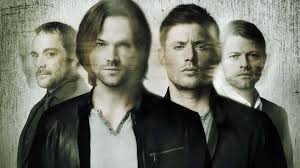

Sinopse
Supernatural foi uma série de televisão americana de fantasia sombria e urbana criada por Eric Kripke produzida pela Warner Bros. Television em parceria com a Wonderland Sound and Vision, que estreou em 13 de setembro de 2005 na The WB Television Network, e depois tornou-se parte da programação da The CW, finalizando em 19 de novembro de 2020. A série narra a história de dois irmãos,Sam Winchester e Dean Winchester, interpretados respectivamente por Jared Padalecki e Jensen Ackles, que caçam demônios, fantasmas, monstros e outras criaturas sobrenaturais no mundo. Eric Kripke estava desenvolvendo Supernatural há quase dez anos; na sua ideia original, os Winchesters não existiam, a história baseava-se em jornalistas que relatavam em suas notícias acontecimentos sobrenaturais. Como a The WB Television Network, emissora original do programa, não aprovou a ideia, Kripke reformulou o conceito da série e teve a aprovação. Os produtores executivos originais são Kripke, McG e Robert Singer.